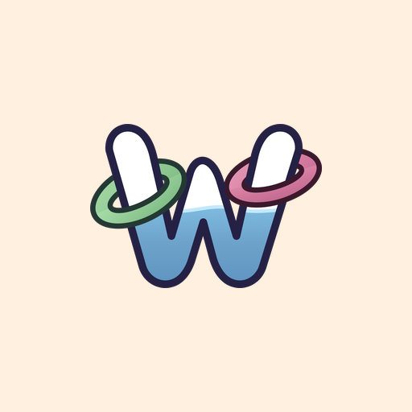

Wota Ringu Toss
ウォーターリングトス
The nostalgic two-button water toy you loved as a kid, made again in cozy 3D.
Remember the nostalgic little water game with two buttons? The classic handheld water ring toss from the school fair, the cereal box, the bottom of a stocking. The one you pressed until your thumbs ached, chasing one last ring onto one last peg.
This is that retro toy, made again with care as a relaxing 3D simulation game with warm, anime-inspired cozy visuals. Press the buttons and feel the water push. Tilt your phone and watch the rings drift with realistic water physics, or keep it flat and play with your thumbs, the way you always did.
Cozy simulation meets classic arcade
Play slowly in a quiet, endless aquarium world with no clock at all, or switch to timed arcade mode when you want a gentle thrill against a hungry starfish. As you play over the days, your tank grows with you—seaweed takes root, tiny fish arrive, and you can paint the toy in your own colours and print your name along the bottom.
Made to be gentle
No energy meters. No notifications calling you back. No streaks to lose. Missing a ring is never called a failure. It plays fully offline and needs no account or sign-in, so it is there whenever you need five calm minutes.
For parents
The game is made for all ages. Ads shown to children are never personalised, there is no chat, and the one purchase sits behind a grown-ups check. The privacy policy explains exactly what the game uses and why.